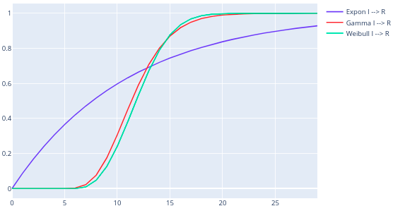

Examining the major flaw of the deterministic SEIR model
probability distributions
modeling
SEIR
epidemiology
Author
Jeffrey Post
Published
March 25, 2020

Motivation for write-up
This is the 3rd part of a multi-part series blog post on modeling in epidemiology.
The COVID-19 pandemic has brought a lot of attention to study of epidemiology and more specifically to the various mathematical models that are used to inform public health policies. Everyone has been trying to understand the growth or slowing of new cases and trying to predict the necessary sanitary resources. This blog post attempts to explain the foundations for some of the most used models and enlighten the reader on two key points.
After introducing the concepts of compartmentalization and disease dynamics in the first blog post, the second part looked at a deterministic numerical solution for the SEIR model discussed, and the effects of the parameters \(\beta\), \(\sigma\), and \(\gamma\).
While arguments can be made that the compartments themselves don’t reflect the reality of COVID-19, this is not the point of this discussion; I want to focus on the idea that the population level dynamics forget about the individual progression of the disease.
With this mind, this third part is going to discuss the problems that arise when averaging the latent period (\(\frac{1}{\sigma}\)) and infectious period (\(\frac{1}{\gamma}\)) on the simulations.
Let’s have a look at the individual progression of disease to understand what is wrong.
Implications of deterministic model
Code
# Import required librariesimport pandas as pdimport numpy as npimport plotly.graph_objects as goimport plotly.express as pximport plotly.io as piofrom scipy.stats import poissonfrom scipy.stats import exponfrom scipy.stats import gammafrom scipy.stats import weibull_minfrom prettytable import PrettyTableimport mathpio.renderers.default ="plotly_mimetype"
Using the numerical model in part 2 and in order to see the distribution of E → I, we set the initial number of E to be the same as the population, and plot the number of E over time as below:
Code
# Define parametersdays =30N =10000init =0, N, 0, 0sigma =1/5.2beta =0.5gam =1/28.85parms = sigma, beta, gam# Plot simulationfig = go.Figure(data=[ go.Scatter(name='E to I', x=np.linspace(0,days,days*10), y=100*(1-seir_model(init, parms, days).T[1]/N)), go.Scatter(name='$\\text{Exponential distribution with} Scale = \\frac{1}{\sigma}$', x=np.arange(days), y=100*expon.cdf(np.arange(days),loc=0,scale=1/sigma))])fig.update_layout( title='Number of E moving to I over time when all population is exposed on day 0', xaxis_title='Days', yaxis_title='Percent of exposed having become infectious', legend=dict( x=0.6, y=0, traceorder="normal", ))fig.show()
Unable to display output for mime type(s): application/vnd.plotly.v1+json
The plot above confirms the numerical model from part 2 assumes people go from E → I according to the exponential distribution.
Infectious period \(= T_{Infectious} = \frac{1}{\gamma}\)
The same discussion above applies for the time from I → R here.
From the discussion above, we know the numerical model in part 2 approximates the time from I → R as an exponential distribution.
Let’s verifiy this in the plot below:
Code
# Define parametersdays =100N =10000init =0, 0, N, 0sigma =1/5.2# 1/5 --> 5 days on average to go from E --> Ibeta =0.5gam =1/28.85# 1/11 --> 11 days on average to go from I --> Rparms = sigma, beta, gam# Plot simulationfig = go.Figure(data=[ go.Scatter(name='I to R', x=np.linspace(0,days,days*10), y=100*(1-seir_model(init, parms, days).T[2]/N)), go.Scatter(name='$\\text{Exponential distribution with} Scale = \\frac{1}{\gamma}$', x=np.arange(days), y=100*expon.cdf(np.arange(days),loc=0,scale=1/gam))])fig.update_layout( title='Number of I moving to R over time when all population is infectious on day 0', xaxis_title='Days', yaxis_title='Percent of infectious having become recovered', legend=dict( x=0.6, y=0, traceorder="normal", ))fig.show()
Unable to display output for mime type(s): application/vnd.plotly.v1+json
The plot above confirms the numerical model from part 2 assumes people go from I → R according to the exponential distribution.
Comparing exponential distribution to COVID-19 data
As we have seen above, this deterministic model implies \(T_{Latent}\) and \(T_{Infectious}\) are exponentially distributed and we know the exponential distribution is uniquely characterized by its scale where: \[scale = \frac{1}{mean}\]
Latent period
For COVID-19, as we have seen in part 2 of the blog, research has shown the following for \(T_{Latent}\): * mean = 5.2 days * range is [2,14] days * 95th percentile is 12.5 days
Assuming an exponential distribution, however, we would obtain the following:
\(mean = \frac{1}{scale} = 5.2\ days\)
95th percentile would be 16 days
After the first day in state E, 18% would move into the state I (the fastest in real-world data was 2 days so this is not possible)
While we can adjust to scale to fit the real-world mean, the distribution does not match the real-world data.
Infectious period
Similarly as above, for COVID-19 we have seen research has shown the following for \(T_{Infectious}\): * median = 20 days * range is [8,37] days
Assuming an exponential distribution, however, we would obtain the following:
95th percentile would be 87 days, while we’d likely want it to be around 37 days
After the first day in state I, 18% would move into the state R (the fastest in real-world data was 8 days so this is not possible)
While we can adjust to scale to fit the real-world mean, the distribution does not match the real-world data - and for a parameter that influences the overall simulation, it is pretty far off.
Let’s see what distribution looks more likely.
Finding a better fit: Gamma or Weibull distributions?
We have seen how different the actual COVID-19 \(T_{Latent}\) and \(T_{Infectious}\) were from the deterministic model using exponential distributions.
Here we want to find a better distribution, and one that immediatly comes to mind is the Gamma distribution.
The gamma distribution is characterized by its shape parameter \(k\) and its scale parameter \(\theta\), where: \[Mean = k~\theta\]
Characterizing the Weibull distribution
Similarly, the Weibull distribution is characterized by its shape parameter \(k\) and its scale parameter \(\theta\), where: \[Mean=\lambda \Gamma \left(1+{\frac {1}{k}}\right)\] And: \[Median = \lambda (\ln 2)^{1/k}\]
Gamma distributed latent period
Let’s first find a Gamma distribution to match \(T_{Latent}\) data for COVID-19.
The mean is 5.2 days.
The range is [2,14] days and 95th percentile is 12.5 days, so we could translate this as follows: * 5th percentile = 2 days * 95th percentil = 12.5 days
\[Mean = k~\theta\]\[\leftrightarrow k~\theta = 5.2\]\[\leftrightarrow k = \frac{5.2}{\theta}\]
We find the following parameters result in a pretty close distribution: * \(loc = 1.8\) * \(k = 0.9\) * \(\theta = \frac{5.2-loc}{k} = 3.\dot{7}\)
Code
p=100000days=30k=0.9locg=1.8theta=(5.2-locg)/kscalee=5.2df = pd.DataFrame({'Exponential': expon.rvs(scale=scalee,size=p),'Gamma': gamma.rvs(k,loc=locg,scale=theta,size=p) })t=PrettyTable(['Distribution', 'Mean', 'Median', '5th percentile', '95th percentile'])t.add_row(['Exponential', df.Exponential.mean(), df.Exponential.median(), df.Exponential.quantile(q=0.05), df.Exponential.quantile(q=0.95)])t.add_row(['Gamma', df.Gamma.mean(), df.Gamma.median(), df.Gamma.quantile(q=0.05), df.Gamma.quantile(q=0.95)])print(t)fig = go.Figure(data=[ go.Scatter(name='Gamma E --> I', x=np.arange(days), y=gamma.cdf(np.arange(days), k, loc=locg, scale=theta), line={'color':'red'}), go.Scatter(name='Expon E --> I', x=np.arange(days), y=expon.cdf(np.arange(days), scale=scalee), line={'color':'blue'}),])fig.update_layout( title={'text':'Exponential vs. Gamma CDF','x':0.5,'xanchor':'center' }, xaxis_title='Days', yaxis_title='Percent of exposed having become infectious', legend=dict( x=1, y=0, traceorder="reversed", ))fig.show()
Unable to display output for mime type(s): application/vnd.plotly.v1+json
Gamma or Weibull distributed infectious period
While we used a Gamma distribution for \(T_{Latent}\) above, we do not have a mean for \(T_{Infectious}\) data for COVID-19. We can still try to find a Gamma distribution that matches but it may be a bit more difficult to do.
With the median however, we could use the Weibull distribution as described earlier.
The range is [8,37] days so we could translate this as follows: * 5th percentile = 8 days * 95th percentil = 37 days
We find the following parameters result in a pretty close Gamma distribution: * \(loc = 3\) * \(k = 4\) * \(\theta = 4.25\)
Similarly, we find the following parameters result in a pretty close Weibull distribution: * \(loc = 2\) * \(k = 2.3\) * \(\lambda = \frac{20-2}{(\ln 2)^{1/k}} = 21.11\)
Code
p =10000days=80k=4locg=3theta=(20-locg)/klocw=2wk =2.3wl = (20-locw)/(math.log(2)**(1/wk))loce=0scale=28.85-locedf = pd.DataFrame({'Exponential': expon.rvs(loc=loce, scale=scale,size=p),'Gamma': gamma.rvs(k,loc=locg,scale=theta,size=p),'Weibull': weibull_min.rvs(wk, loc=locw, scale=wl,size=p) })t=PrettyTable(['Distribution', 'Mean', 'Median', '5th percentile', '95th percentile'])t.add_row(['Exponential', df.Exponential.mean(), df.Exponential.median(), df.Exponential.quantile(q=0.05), df.Exponential.quantile(q=0.95)])t.add_row(['Gamma', df.Gamma.mean(), df.Gamma.median(), df.Gamma.quantile(q=0.05), df.Gamma.quantile(q=0.95)])t.add_row(['Weibull', df.Weibull.mean(), df.Weibull.median(), df.Weibull.quantile(q=0.05), df.Weibull.quantile(q=0.95)])print(t)fig = go.Figure(data=[ go.Scatter(name='Expon I --> R', x=np.arange(days), y=expon.cdf(np.arange(days), loc=loce, scale=scale), line={'color':'blue'}), go.Scatter(name='Gamma I --> R', x=np.arange(days), y=gamma.cdf(np.arange(days), k, loc=locg, scale=theta), line={'color':'red'}), go.Scatter(name='Weibull I --> R', x=np.arange(days), y=weibull_min.cdf(np.arange(days), wk, loc=locw, scale=wl), line={'color':'green'})])fig.update_layout( title={'text':'Exponential vs. Gamma vs. Weibull CDF','x':0.5,'xanchor':'center' }, xaxis_title='Days', yaxis_title='Percent of exposed having become infectious', legend=dict( x=1, y=0, traceorder="normal", ))fig.show()
Unable to display output for mime type(s): application/vnd.plotly.v1+json
Discussion
\(T_{Latent}\) is nicely matched with a Gamma distribution.
\(T_{Infectious}\) is nicely matched by a Weibull distribution.
The take away however is that the exponential distribution matches neither - and in the case of \(T_{Infectious}\) it is very far off.
We have seen in the previous posts that both of these periods have an impact on the peak proportion of infectious people and the duration of that peak.
Naturally, we need to investigate further the impact of changing the distributions from exponential to Gamma and Weibull on the simulations.
This is done in the next blog post where I build a new model to be able to take into account the actual distributions.